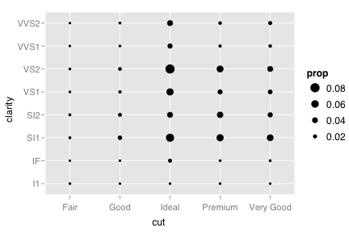
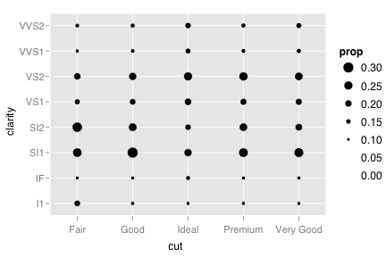
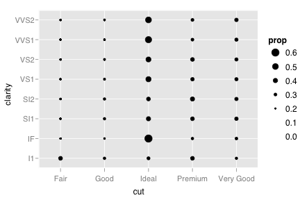
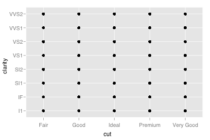

stat_sum
Sum unique values. Useful for overplotting on scatterplots
Details
Aesthetics
The following aesthetics can be used with stat_sum. They are listed along with their default value. All geoms and scales can also use the group aesthetic. Read how this important aesthetic works in scale_group. Typically, you will associate an aesthetic with a variable in your data set. To do this, you use the aes function: stat_sum(aes(x = var)). Scales control the details of the mapping between data and aesthetic properties; after each aesthetic are listed scales that can be used with that aesthetic. The scale documentation will also provide references to help you interpret the default values.
Instead of mapping an aesthetic to a variable in your dataset, you can also set it to a fixed value. See the parameters section for details.
size:
..prop..(scales: area, manual, size, size_discrete)
Default geom
geom_point. Override with the geom argument: stat_sum(geom="point").
See also
- ggfluctuation: Fluctuation diagram, which is very similar
Examples
> d <- ggplot(diamonds, aes(x=cut, y=clarity)) > # Need to control which group proportion calculated over > # Overall proportion > d + stat_sum(aes(group=1))  > # by cut > d + stat_sum(aes(group=cut))  > # by clarity > d + stat_sum(aes(group=clarity))  > > # Or using qplot > qplot(cut, clarity, data=diamonds)  > qplot(cut, clarity, data=diamonds, stat="sum", group=1) src "\n"